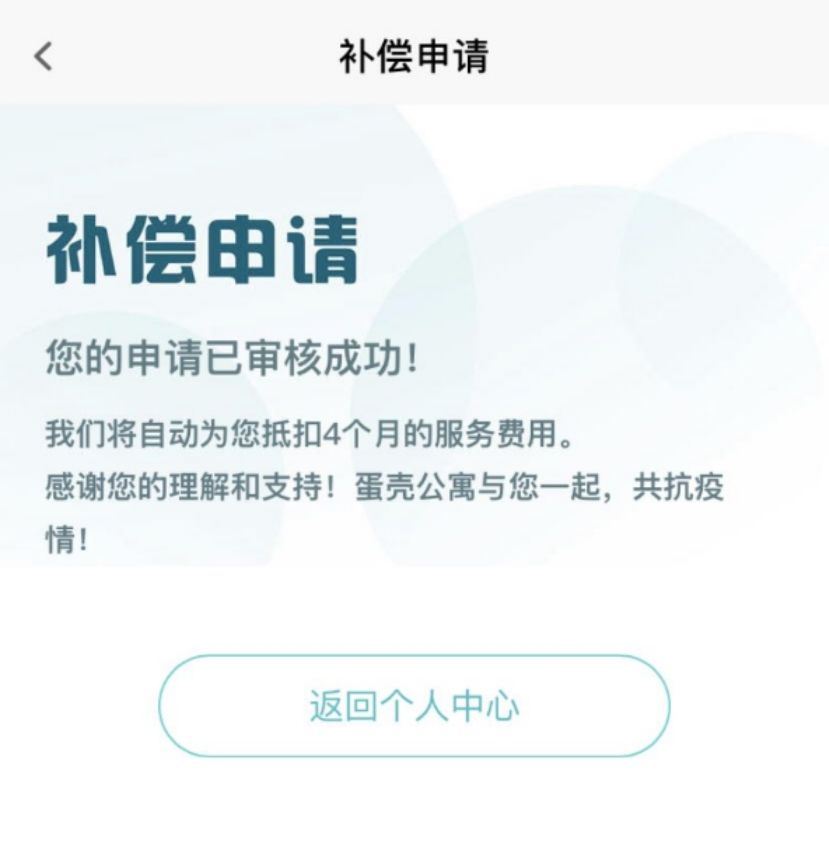
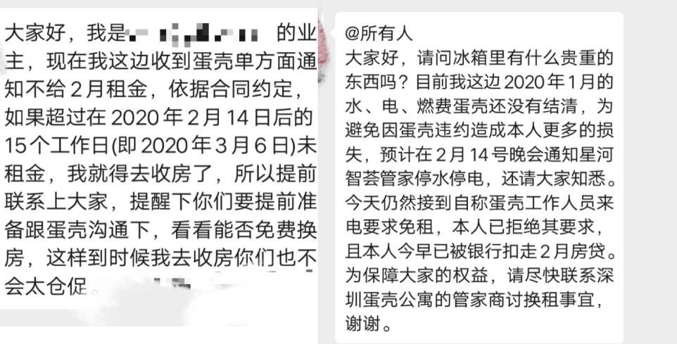
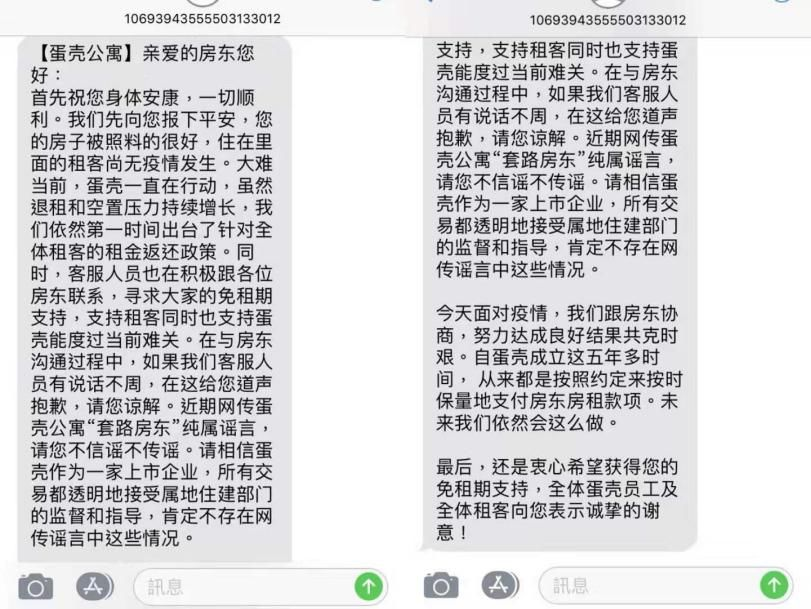

疫情之下，蛋壳自如为何吃相难看？
原文链接 备份链接 《创新经济战疫计划》，是燃财经在新型肺炎疫情期间推出的特别栏目，关注创新经济企业遇到的新难题、商讨应该采取的新对策，希望能够帮助中小企业一起战胜挑战、把握机会。 作者 | 苏琦 编辑 | 魏佳 “如果没法续约，我难道 …

新冠肺炎疫情来势汹涌，波及了人们生活的方方面面。长租公寓市场的两家头部企业：蛋壳和自如，先后被推上了风口浪尖。
文 | 谢婵 薛雨霏 编辑 | 沈小山

新冠肺炎疫情来势汹涌，波及了人们生活的方方面面。长租公寓市场的两家头部企业：蛋壳和自如，先后被推上了风口浪尖。
蛋壳：疫情期间强制让租客搬家
满岛差点被逼搬家了。
2月16日那天，蛋壳公寓的管家通知她，房东20号要收房，她得搬走。
搬家一点也不现实，他们暂未回到租住城市。疫情闹得人心惶惶，各个小区早已是是封闭状态，能往哪里搬呢？
满岛租的这间房子原本签订了一年合同，如今才过去半年。按照合同，她提出平台违约需要赔付自己一个月房租。管家以“疫情原因不属于我司违约”为由拒绝了。
管家提出会代劳搬家，全程录像，她希望对方必须保证“物品要保管好，如果有丢失要负责”。对方也拒绝了。
与管家几次协商未果，她开始在各种业主群里求助，希望能找到房东与房东商量。
直到联系上房东，她才意识到差点被蛋壳忽悠了。房东告诉她，自己并未提出收房，而是被蛋壳提出了单方面解约。房东也让她宽心，答应她就算与蛋壳解约了她也可以继续住在这里，至少不会在疫情期间赶她走。
满岛的遭遇并非个例。
房东大伟迟迟没有收到他的租金。客服告诉他，对方租户已经准备搬走了。
2月12号这天下午，他原本是打算去给房子换锁。去之前给租户张然打了电话确认——之前因为修理等琐事，他们互留了电话。
电话那头的张然懵了，他已经支付了这月房租，近期也没有任何退租和转租的需求。
此后是漫长的维权，大伟已经疲倦了，“（蛋壳）不知道换了多少人打电话(给我)，每个人都有不同说法。”大伟告诉记者，到后来，工作人员已经不承认之前提过的“租客主动提出解约”一说。
事情不仅没有解决，蛋壳的工作人员反而提起希望大伟能免掉一个月的房租，并说租客可以去申请免交房租。“房客能申请到免租，我们也就算了，毕竟疫情原因，但如果他们不给房客免，那肯定我们也不免的。”
张然去软件上找了好一会免租申请，最后只提交了免去四个月服务费的申请——这是他找到的唯一一个补偿申请。
疫情之下，房东们应该收到的租金迟迟未到，租客们按期缴费仍面临被清走的风险。

(张然提交的补偿申请)
蛋壳租客并未享受到免租政策
“蛋壳公寓房主维权超话”里聚集了大批房东，与大伟遭遇类似，称未收到1月份的房租。部分业主称，此前蛋壳曾联系他们，以疫情为由要求强制减免一个月房租。除此之外，相关维权超话里，也有大量爆料指出，蛋壳公寓曾强制要求武汉地区业主免租3个月，但免租优惠并未落实到租户头上，大部分租户只领到一张免租十天的券。此前，蛋壳曾提出，为无法返城的武汉租客返还一个月房租，为其它各城市租客根据各地政府发布的因疫情延期返工的天数，返还租客相对应的租金，或提供相对应的免费延住天数。


（蛋壳近期退租难的问题同样引租户不满）
2月2日，房东小爱被同事提醒，蛋壳管家开始陆续联系房东让他们把一个月的房租免掉。她原以为因为假期原因，收入会延迟到账，没想到是不会到账。小爱每月都要还房贷，自己2月的房租还是借钱付的。她只好多次拨打客服电话和12345，可惜之后的五天里对方一直没有给他答复。
通过小区物业和居委会，小爱辗转联系到自己的租户。这位湖南小伙年初六就回到了北京，一直呆在家里，还给小爱看了他的缴费记录。
在深圳租房的菲菲早就将2月份的房租交给了蛋壳管家，但平台不仅没有把这笔钱给她的房东，甚至连1月的水、电、燃气也没有结清。房东只好通知他们将会在2月14日停水停电，在3月6日收房，并提醒他们换房一定要提前找客服协助。

（蛋壳未给房东结清2月租金和1月水电燃费）
2月15日，菲菲的房东已经去现场解约，并告知他们会有人联系相关事宜。但至今这些人不在深圳的租客仍然没有接到蛋壳的联系，“其实我们还是想跟房东签，现在因为疫情也不敢回深圳，搬不了，换也麻烦，但也没办法了。”
维权的十天里，部分北京业主包括小爱陆续接到了东城住建委的电话，表示已联合市场监管等相关部门约谈蛋壳，要求其必须按合同规定15个工作日内付款。然而2月8日，蛋壳客服换了个手机号，继续打给小爱索要免租期，并在小爱问起工号时回复“要这个干什么”，而后强行挂断电话。
2月10日，业主们又等来蛋壳单方面提出的“花式解约”话术：不仅不赔偿违约金，还要拿押金来抵本月的房租，家电也要全部拉走。小爱不同意这样的解约条件，选择走法务，但至今仍没有动静。
许多蛋壳房东都在2月10日那天收到了平台的短信，“……大难当前，蛋壳一直在行动，虽然退租和空置压力持续增长，我们依然第一时间出台了针对全体租客的租金返还政策。同时，客服人员也在积极跟各位房东联系，寻求大家的免租期支持，支持租客同时也支持蛋壳能度过当前难关。”

（蛋壳公寓发给房东的短信）
这则以亲爱的房东开头的短信里同时提到，近期网传蛋壳公寓“套路房东”纯属谣言。但在“蛋壳公寓房主维权超话”，依旧有大量房东说出自己的遭遇，希望得到网络关注，为自己维权。
在连日不断的指控声中，蛋壳公寓于2月17日发布了《致广大房东的真心话》，称因疫情突发正值春节假期，客服中心无法正常运转，导致平台和房东之间缺乏沟通。
在这份回应中，蛋壳也提到“向房东寻求的免租期爱心支持，用于对租客进行补贴”。

被困住的自如租客：无奈高价续租
2月3日，刚从江苏老家回到北京的大钱接到了来自自如管家的电话。她所租的房子将在二月底到期，管家是来询问她是否要续租。原本准备月底搬回江苏的大钱，现在因为疫情有了“无法搬家”的顾虑。
如果租房到期前不把东西搬走，自如就会更换电子密码锁，房子里面大钱的东西也会被丢掉。然而目前快递进不了小区、人出小区需要开证明、开车的话高速公路可能不通······当她提及这时候续约是否有优惠时，管家却表示没有优惠，并且她的月租会从4390涨到4790，给出的原因则是“哎你们小区的主卧真的太贵啦”。
大钱不是唯一一个被通知房租要涨的自如租客，2月10日，“自如”二字上了热搜。许多租客在社交平台上放出跟自如管家的聊天记录，称自如趁租客不便搬家换租，续租租金普遍上涨10%~30%。
除租金外，自如还会收取房租的10%作为服务费，其中包括清洁、搬家、维修等服务。但大钱家门口的保洁记录表却显示，保洁员已经超过一个月没有上门服务。

（大钱家门口的自如客保洁记录表）
受疫情影响，无法及时返回租房是常态，面对房租不同程度的上涨，不少租客只能无奈续约。
大四的小洁从去年11月开始在杭州实习，实习期为时3个月。初入社会的她在自如上找房子。管家告诉她短期租房要至少6个月，并承诺等3个月小洁实习结束后，一定帮小洁把房子转租出去，不会继续扣小洁的房租。
然而3个月后，小洁还是被扣了2月份的房租。并且因为山东老家交通停摆，杭州滨江区也不允许租户进入，现在只能靠网络维权为自己发声。

（自如管家推荐小洁办贷款来缴房租）
在北京工作的夏冰还滞留在老家，房子还有5天到期。她问了续租价格，159每日，比之前上涨了23.2％–刚租这套房子的时候，价格还是129每日。
老家的公众交通全停了，回北京唯一的办法是去临近省市的机场。若在往常，父母还能开车送一下她，但当下，她的父母都是一线医务人员，没空开车送她去隔壁省的机场，也没办法回北京搬家。
夏冰主动问了管家，管家同意将房租按照最近一次的标准续约。但未提及减免2月份服务费一事。夏冰未做过多纠缠，想着等决定了回程日期再问减免服务费一事。
疫情期间自如的各种优惠落实了吗？
2月10日，自如CEO熊林在朋友圈回复：自如客户续约价格出现大的波动是极个例情况，主要原因有两个，一是客户从长租变更为月租或季租(租金包含了服务费)，二是房源价格显著低于同地段、同小区类似房源价格；
同一天，一篇名为《自如推短续优惠活动，用户：已用优惠，价格实惠》的文章在网上流传，里面提到：当租客出现2月14日前无法返程、合同到期前无法搬家等情况时，有短续1个月需求的，可在续约前联系自如管家并提供相关证明，管家会协助申请短续优惠。
北京的自如客何逸看见文章之后再次拨通了（自如）管家的电话，管家向她确认了优惠活动是存在的，但由于她已经续约，无法享受这一优惠。
她心里想，难道这个酌情减免的优惠政策是瞒着所有员工突然间推行出来的吗？几天前，她曾在电话里反反复复问管家，疫情期间是否有优惠政策或者有这方面的考虑，管家一直回复她：“我们目前没有任何政策”。管家也举出了自如的难处：“重大疫情之下，我们肯定要考虑到我们自己的生存问题”。
她租的房子原本于2月15日到期，由于疫情期间交通受阻无法及时返京的无奈选择续租，管家告诉他，短租续租要涨价15％。
“你让我正常交（房租），就算空一个月我无所谓，这种特殊情况下还有加价，就觉得有点不太理解。”
2月12日，自如推出了《共抗疫情·平安自如系列举措之三》，表示将为因疫情导致无法如期返回租住城市的自如客提供便利续租、退租流程，具体措施包括：短续一个月与长续同等价格、3月1日后返回居住的自如客将减免2月份服务费、3月1日后仍无法返回并无退租考虑的自如客可办理无责解约。对于因疫情导致无法返回租住社区的自如客，也将提供临时安置房源。
针对这则优惠措施的时效性，自如品牌公关部当天下午回应南都周刊称，陆续发布的相关举措从疫情以来一直在细密讨论和制定，举措发布后即开始实施。相关措施有效期会根据疫情发展及实际情况进行调整，“短续一月的优惠政策是(2月）7号发布上线，大多管家业务同事并不提前知道。”
（应采访对象要求，文中人物均为化名）
来源｜南都周刊
END
欢迎分享到朋友圈，如想取得授权请邮件：newmedia@nbweekly.com。如果想找到小南，可以在后台回复「小南」试试看哦~

原文链接 备份链接 《创新经济战疫计划》，是燃财经在新型肺炎疫情期间推出的特别栏目，关注创新经济企业遇到的新难题、商讨应该采取的新对策，希望能够帮助中小企业一起战胜挑战、把握机会。 作者 | 苏琦 编辑 | 魏佳 “如果没法续约，我难道 …
原文链接 备份链接 以下文章来源于燃财经 ，作者燃财经工作室 图片来源：Pexels 作者：苏琦 编辑：魏佳 本文来源：燃财经 （ID：rancaijing ） “ 年后本是租房高峰，因为疫情，流动性被锁死，公司只能打起了老租客的主意。 …
原文链接 备份链接 文/周雄飞 编辑/大风 据锌财经了解，从1月31日开始，武汉、北京、杭州和深圳等地很多与蛋壳公寓签约的房主都接到了蛋壳官方的“拜年”电话，并且被通知：由于疫情影响，响应国家号召，要免去一定时间的房租。 还没等到接话询 …
原文链接 备份链接 Original 老九论财经 三联生活周刊 三联生活周刊 About Feature 一本杂志和他倡导的生活。 Today 在全国人民对抗肺炎疫情的战役中，很多人都在想办法贡献绵薄之力，但是一些浑水摸鱼的行为也开始浮出 …
原文链接 备份链接 律师表示，若自如行为属实，租客应为自己维权赶在封城前坐上火车离开，通过体温测量顺利进京后又住进小区，但湖北人小王没想到自己在隔离期间，却要搬家。 让他搬家的是自如。 续约涨价，未能提供服务但正常收取服务费，不同意无法 …